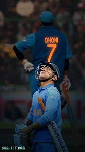
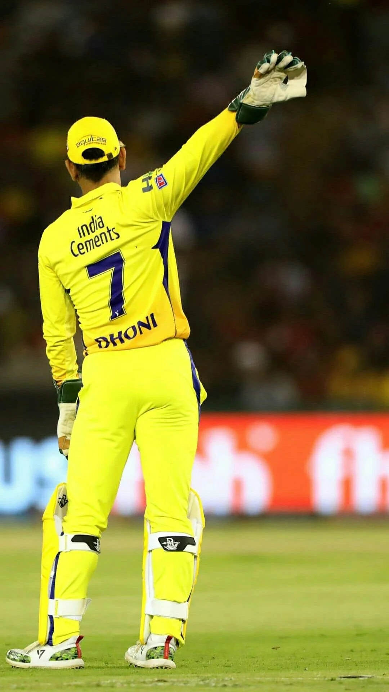

Name:Sravani Neelapu
Class:CSE-3
Roll Number:323103310168
Transformation of Indian Cricket Team
Indian Cricket team in 1775
In 1975, India's cricket team participated in the first-ever Cricket World Cup. It was a big deal because it was the first time India played in this global tournament for one-day international cricket. Led by Srinivas Venkataraghavan, the team had some talented players like Sunil Gavaskar and Gundappa Viswanath.
They did pretty well, reaching the semi- finals, which means they were among the top teams in the tournament. However, they were eventually defeated by England in the semis and didn't win the Cup. Even though they didn't take home the trophy, their performance helped create excitement about cricket in India and set the stage for future successes in international cricket.
Indian Cricket team in 1979
The Indian cricket team of 1979 was a fascinating blend of experienced players and emerging talents. Led by the charismatic all-rounder, Sunil Gavaskar, the team had notable players like Kapil Dev, Gundappa Viswanath, Dilip Vengsarkar, and Bishan Singh Bedi among others.
In 1979, India participated in the ICC Cricket World Cup held in England. The team showed promise but faced challenges, unable to progress beyond the group stage. They won two out of their five matches, with victories against East Africa and Bermuda but faced defeats against the West Indies, New Zealand, and England. India's performances in this World Cup weren't as strong as their potential indicated, and they fell short of reaching the knockout stages.
Sunil Gavaskar was one of the standout performers for India in that tournament, showcasing his batting prowess and skill against top-notch bowling attacks. However, the team's overall performance didn't live up to expectations, and they couldn't make a significant impact in the tournament.
Despite the World Cup disappointment, many players from the 1979 Indian cricket team went on to make significant contributions to Indian cricket, shaping its future successes in subsequent years. Kapil Dev, in particular, emerged as a pivotal figure in Indian cricket, captaining the team to its historic World Cup win in 1983.
The team of 1979 laid the groundwork for Indian cricket's future successes, and many of its players left a lasting legacy in the sport.
Indian Cricket team in 1983
The 1983 Cricket World Cup victory by the Indian cricket team was historic for several reasons:
Underdog Triumph: India was considered an underdog in the tournament, given the dominance of the West Indies team at that time. The West Indies were the reigning champions and a formidable force in cricket.
Kapil Dev's Leadership: Kapil Dev led the team with exceptional captaincy skills and inspired the players to perform beyond expectations.
Semi-Final Victory: The turning point was the semi-final match against England, where India's performance was extraordinary. A crucial catch by Kapil Dev to dismiss Vivian Richards is remembered as a game-changing moment.
Final Match: In the final against the West Indies, India put up a modest score of 183 runs. However, the Indian bowlers, especially Mohinder Amarnath, Madan Lal, and Roger Binny, displayed phenomenal bowling, restricting the West Indies to 140 runs, securing India's victory by 43 runs.
Symbol of Change: This win was significant not only in cricket but also for the country. It marked a shift in India's cricketing prowess and instilled a sense of belief that the team could compete and win at the highest level.
Impact on Indian Cricket: The victory acted as a catalyst for the popularity of cricket in India, inspiring a generation of cricketers and fans. It laid the foundation for future successes in international cricket for the Indian team.
The 1983 World Cup win is etched in the memory of Indian cricket fans as a watershed moment that changed the perception of Indian cricket on the global stage.


To know more about HTML and CSS code watch this video below